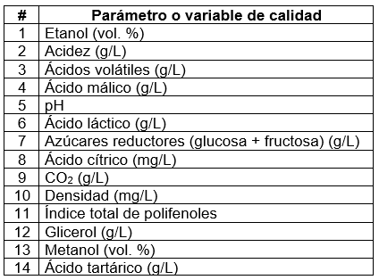
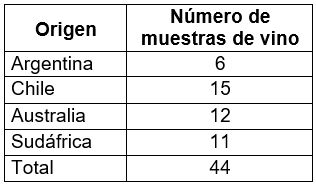

4 Genaralización del PCA a más de tres dimensiones
En este capítulo usaremos datos reales en muestras de vino provenientes de distintos países. Todos los datos pueden encontrarse en el repositorio de este libro en la carpeta “datos”.
4.1 Datos
En las muestras de vino se midieron las siguientes variables o parámetros de calidad.

Las muestras de vino procedieron de Argentina, Chile, Australia y Sudáfrica.

Las seis primeras filas renglores del conjunto de datos tienen este aspecto.
# Nombres de las variables o parámetro de calidad
nombres_var <- read.csv("datos/Label_Pred_values_IR.csv")
nombres_var <- names(nombres_var)
# Etiquetas o códigos en las muestras de vino
cod_vino <- read.csv("datos/Label_Wine_samples.csv", header = FALSE)
cod_vino <- unname(unlist(cod_vino))
# Conjunto de datos completo para las muestras de vino
datos_vino <- read.csv(
"datos/Pred_values.csv", header = FALSE,
row.names = cod_vino, col.names = nombres_var
)
head(datos_vino)## Etanol Acidez AcVolatiles AcMalico pH AcLactico AzucarReductor
## ARG-BNS1 13.62 3.54 0.29 0.89 3.71 0.78 1.46
## ARG-DDA1 14.06 3.74 0.59 0.24 3.73 1.25 2.42
## ARG-FFL1 13.74 3.27 0.47 -0.07 3.87 1.13 1.52
## ARG-FLM1 13.95 3.66 0.47 0.09 3.79 1.00 4.17
## ARG-ICR1 14.47 3.66 0.38 0.61 3.70 0.81 1.25
## ARG-SAL1 14.61 3.45 0.52 0.16 3.92 1.76 1.40
## AcCitrico CO2 Densidad Polifenoles Glicerol Metanol AcTartarico
## ARG-BNS1 0.31 85.61 0.99 60.92 9.72 0.16 1.74
## ARG-DDA1 0.18 175.20 1.00 70.64 10.05 0.20 1.58
## ARG-FFL1 0.39 513.74 0.99 63.59 10.92 0.18 1.24
## ARG-FLM1 0.41 379.40 1.00 73.30 9.69 0.23 2.26
## ARG-ICR1 0.14 154.88 0.99 71.69 10.81 0.20 1.22
## ARG-SAL1 0.10 156.30 0.99 71.79 10.19 0.19 0.90En este conjunto de datos las muestras de vino están marcadas como los nombres de las filas o renglones, y cada muestra tiene asociados los valores de cada parámetro de calidad (las columnas). Es importante prestar atención a la información señalada en columnas y renglones al calcular las matrices de covarianza o utilizar funciones para realizar el PCA, ¿queremos reducir las dimensiones con respecto a las filas o con respecto a las columnas? En este ejemplo nos interesa reducir el número de dimensiones con respecto a los parámetros de calidad y tratar de detectar si hay algunas similitudes o diferencias entre las muestras de vino.
4.2 Centrar cada variable y dividir por su desviación estándar
Primero restamos el promedio de cada variable (columnas) y dividimos el resultado entre la desviación estándar.
library(purrr)
# Promedios de cada variable
prom_vars <- unlist(map(datos_vino, mean))
# Desviación estándar de cada variable
de_vars <- unlist(map(datos_vino, sd))
# Centrar cada variable
datos_vino_2 <- map2(
datos_vino, prom_vars, .f = function(x, mean) x - mean
)
# Dividir por la desviación estándar de cada variable
datos_vino_2 <- map2(
datos_vino_2, de_vars, .f = function(x, sd) x / sd
)
# Generar una matriz a partir de la lista anterior
datos_vino_2 <- as.matrix(data.frame(datos_vino_2))Cada renglón de los datos transformados corresponde a la misma muestra de vino que en los datos originales.
Los primeros seis renglones de los datos transformados tienen el siguiente aspecto.
head(datos_vino_2)## Etanol Acidez AcVolatiles AcMalico pH AcLactico
## [1,] -0.63678490 -0.40870999 -0.7811641 2.2627949 0.18823560 -0.88226788
## [2,] 0.29224039 0.01096889 1.3231961 -0.5694123 0.40060358 0.38388752
## [3,] -0.38341492 -0.97527630 0.4814521 -1.9201573 1.88717937 0.06061381
## [4,] 0.05998306 -0.15690246 0.4814521 -1.2229986 1.03770749 -0.28959935
## [5,] 1.15792166 -0.15690246 -0.1498560 1.0427673 0.08205162 -0.80144937
## [6,] 1.45351897 -0.59756526 0.8321787 -0.9179917 2.41810183 1.75780072
## AzucarReductor AcCitrico CO2 Densidad Polifenoles Glicerol
## [1,] -0.5311188 1.1594920 -1.6049333 -0.7844233 -0.1371321 -0.525885112
## [2,] 0.1996454 0.1084153 -0.9482843 1.2458487 1.2376582 -0.160707984
## [3,] -0.4854461 1.8063082 1.5330409 -0.7844233 0.2405111 0.802031811
## [4,] 1.5317676 1.9680124 0.5483973 1.2458487 1.6138874 -0.559083800
## [5,] -0.6909735 -0.2149929 -1.0972195 -0.7844233 1.3861700 0.680306454
## [6,] -0.5767916 -0.5384011 -1.0868116 -0.7844233 1.4003137 -0.005784994
## Metanol AcTartarico
## [1,] -1.1081037 0.43877622
## [2,] -0.0870238 -0.03865555
## [3,] -0.5975635 -1.05319837
## [4,] 0.6787860 1.99042974
## [5,] -0.0870238 -1.11287729
## [6,] -0.3422939 -2.06774119Dividir por las desviaciones estándar es una forma de dar a cada variable la misma importancia a pesar de su rango, magnitud y/o escala de medición. Además de dividir por la desviación estándar, son posibles otras transformaciones que pueden aplicarse en función de los datos. Consulte los referencias al final de este manual si está interesado.
4.3 Calcular la matriz de covarianzas
Para obtener la matriz de covarianzas multiplicamos los datos (como una matriz) por su traspuesta y dividimos por el número de renglones menos uno (los grados de libertad).
# Calcular la matriz de covarianzas
vino_cov <- (t(datos_vino_2) %*% datos_vino_2) /
(nrow(datos_vino_2) - 1)
vino_cov[1:5, 1:5]## Etanol Acidez AcVolatiles AcMalico pH
## Etanol 1.00000000 0.3262321 0.2028382 0.04166778 0.1697347
## Acidez 0.32623209 1.0000000 0.4660575 -0.26067574 -0.3518303
## AcVolatiles 0.20283816 0.4660575 1.0000000 -0.74628880 0.3011611
## AcMalico 0.04166778 -0.2606757 -0.7462888 1.00000000 -0.2929542
## pH 0.16973470 -0.3518303 0.3011611 -0.29295421 1.0000000Solo se muestran los primeros cinco renglones y columnas de la matriz de covarianza. Si estás utilizando R Studio, puedes usar la función View() con vino_covcomo argumento para desplegar una ventana completa que mostrará los datos como en una hoja de Excel.
En la matriz anterior, los valores en la diagonal son las varianzas de cada variable y los valores fuera de la diagonal son las covarianzas entre las variables. Como puede observarse, todas las varianzas son iguales a 1. Esto es precisamente el efecto de centrar y dividir por la desviación estándar de cada variable.
4.4 Obtener los valores y vectores propios de la matriz de covarianzas
Para obtener los valores y vectores propios usamos la función eigen().
vino_eg <- eigen(vino_cov)
# Valores propios
val_eg <- vino_eg$values
# Vectores propios
vec_eg <- vino_eg$vectorsEl número de vectores y valores propios es el mismo que el número de variables en el conjunto de datos originales.
# Número de valores propios
length(val_eg)## [1] 14# Número de vectores propios
ncol(vec_eg)## [1] 144.5 Gráfica de barras para el porcentaje de variación de cada componente principal
Ahora calculamos el porcentaje de variación de cada componente y realizamos una gráfica de barras.
# Calcular la varianza de cada valor propio
vars_val_eg <- val_eg / (nrow(datos_vino_2) - 1)
# "Data frame" con los porcentajes de variación
vars_perc <- data.frame(
PC = unlist(map(1:14, function(x) paste0("PC", x))),
PER = round((vars_val_eg * 100) / sum(vars_val_eg), 4)
)
# Gráfica de barras
library(ggplot2)
ggplot(
vars_perc,
aes(x = reorder(PC, order(PER, decreasing = TRUE)), y = PER)
) +
geom_col(width = 0.5, color = "black") +
xlab("Componente Principal") +
ylab("Porcentaje de variación (%)") +
theme_classic()
4.6 Representar los datos en dos dimensiones
Idealmente, si los primeros dos componentes reunieran la mayor parte de la variación, digamos más del 90%, sería posible hacer una buena representación de los datos en una gráfica de dispersión en dos dimensiones. Ya que la mayor parte del tiempo los datos reales rara vez son ideales, en este ejemplo utilizaremos PC1, PC2, PC3 y PC4, que en conjunto representan el 73% de la variación. En estos casos podemos tratar de detectar grupos haciendo dos gráficas de dispersión, el primero con PC1 y PC2, y el segundo con PC3 y PC4.
En primer lugar, cambiamos la base de los datos transformados por la indicada por los vectores propios.
library(dplyr)
# Cambiar la base de los datos centrados
datos_vino_cb <- datos_vino_2 %*% solve(vec_eg)
# Transformar a un "data frame"
datos_vino_cb <- data.frame(datos_vino_cb)
colnames(datos_vino_cb) <- vars_perc$PC
# Añadir una columna con los datos de origen de cada muestra de vino
datos_vino_cb <- datos_vino_cb %>%
mutate(
MuestraVino = unlist(map(cod_vino, function(x) substr(x, 1, 3)))
) %>%
relocate(MuestraVino)
head(datos_vino_cb)## MuestraVino PC1 PC2 PC3 PC4 PC5
## 1 ARG -0.8340408 0.8560257 1.2477283 -0.2946354 -2.64962606
## 2 ARG 0.9182495 -0.7520145 0.8955902 -0.3967229 0.06460487
## 3 ARG 2.0109822 0.2126599 -0.4739304 -1.3446676 0.96328060
## 4 ARG 2.8454813 -1.9323804 0.5129401 -0.2805325 -0.56882676
## 5 ARG -0.4027013 0.7424389 0.3544802 -1.3925516 -0.86093254
## 6 ARG 0.4921766 0.6976268 0.9133225 -1.3858705 0.58195738
## PC6 PC7 PC8 PC9 PC10 PC11
## 1 -0.09972511 0.6839127 -0.64470453 1.30296999 0.08192591 0.90864847
## 2 -1.15201976 -0.6156587 0.09652472 -0.66508130 0.22293709 -0.44745146
## 3 -0.97714541 0.7454403 1.13873701 -0.36070456 -1.80323468 1.57277920
## 4 0.04685162 0.9391345 1.05427365 0.06617118 -0.72767986 -1.40159736
## 5 -0.43249796 -1.2152728 0.19062688 1.02200106 0.80693595 -0.03070849
## 6 -1.12762870 -0.7447312 2.12377275 -1.45181400 0.27437060 1.29332051
## PC12 PC13 PC14
## 1 0.09448821 0.2045349 0.2889872
## 2 0.60237715 -1.1576675 -0.2344966
## 3 -0.74179131 0.9287338 -0.2968222
## 4 0.97819193 -0.1854973 0.5890199
## 5 -0.89310589 -0.3806547 -1.1129547
## 6 -1.49226046 -1.9552497 -1.2846205Ahora hagamos ambas gráficas de dispersión tomando los valores de PC1, PC2, PC3 y PC4.
library(ggpubr)
# Gráfica de dispersión para PC1 y PC2
pc12 <- ggplot(
datos_vino_cb,
aes(PC1, PC2, color = MuestraVino, shape = MuestraVino)
) +
geom_point(size = 3) +
ggtitle("PC1 y PC2") +
xlab("PC1 (24.4%)") +
ylab("PC2 (21.3%)") +
theme_classic() +
theme(legend.position = "none")
# Gráfica de dispersión para PC3 y PC4
pc34 <- ggplot(
datos_vino_cb,
aes(PC3, PC4, color = MuestraVino, shape = MuestraVino)
) +
geom_point(size = 3) +
scale_color_discrete(
name = "País de origen",
labels = c("Argentina", "Australia", "Chile", "Sudáfrica")
) +
scale_shape_discrete(
name = "País de origen",
labels = c("Argentina", "Australia", "Chile", "Sudáfrica")
) +
ggtitle("PC3 y PC4") +
xlab("PC3 (17.5%)") +
ylab("PC4 (10.0%)") +
theme_classic()
# Ambas gráficas lado a lado
ggarrange(pc12, pc34, widths = c(1.5, 2))
4.7 Pesos (Loading scores)
Los elementos de cada vector propio representan el peso de cada variable en el componente principal correspondiente.
# "Data frame" con los pesos
pesos_vino <- data.frame(vec_eg)
colnames(pesos_vino) <- vars_perc$PC
rownames(pesos_vino) <- nombres_var
head(pesos_vino)## PC1 PC2 PC3 PC4 PC5
## Etanol -0.2050720 -0.3452884 0.28833198 -0.33833697 0.001102612
## Acidez -0.1457210 -0.4545803 -0.06374909 0.42139270 0.041508880
## AcVolatiles 0.2959952 -0.4418538 0.03338975 0.08430388 -0.010891943
## AcMalico -0.3401714 0.3173079 0.17907611 -0.04002812 -0.252870228
## pH 0.2413635 -0.1030772 -0.04459655 -0.66472873 -0.170592676
## AcLactico 0.3462627 -0.3745378 -0.16738658 0.11850141 -0.108643313
## PC6 PC7 PC8 PC9 PC10
## Etanol -0.02992588 0.106645513 0.40565761 0.2220668 -0.0736428
## Acidez -0.10721872 0.109080109 -0.15801516 0.1647662 -0.1264076
## AcVolatiles 0.12676353 -0.117134956 -0.01066998 -0.2323371 0.1969852
## AcMalico 0.09495473 0.247290148 -0.35870967 0.1792700 -0.2720317
## pH 0.01717167 -0.191605072 -0.30040129 0.3352702 0.2882746
## AcLactico 0.05496474 0.008009813 -0.10169448 0.1377493 -0.2860564
## PC11 PC12 PC13 PC14
## Etanol 0.52247393 -0.22486081 0.29025391 0.04195694
## Acidez -0.09209975 -0.25488777 -0.01537897 -0.65083548
## AcVolatiles 0.19114512 -0.33800897 -0.59864003 0.27743084
## AcMalico -0.07338526 -0.53559762 -0.18854505 0.23066288
## pH -0.21200578 -0.09998927 -0.02838824 -0.28223548
## AcLactico -0.32247769 -0.11583440 0.49548494 0.45696212Hacer una gráfica de dispersión con estos valores puede ayudar a ver patrones de variación y/o explicar las agrupaciones o diferencias en las gráficas de dispersión de los componentes principales.
# Dispersión con pesos de PC1 y PC2
ld_pc12 <- ggplot(pesos_vino, aes(PC1, PC2)) +
geom_point(color = "blue", size = 2) +
geom_vline(xintercept = 0) +
geom_hline(yintercept = 0) +
geom_text(aes(label = rownames(pesos_vino)), hjust = -.2) +
ggtitle("Pesos para PC1 y PC2") +
xlim(c(-.7, .7)) +
ylim(c(-.7, .7)) +
xlab("PC1 (24.4%)") +
ylab("PC2 (21.3%)") +
theme_classic()
# Dispersión con pesos de PC3 y PC4
ld_pc34 <- ggplot(pesos_vino, aes(PC3, PC4)) +
geom_point(color = "blue", size = 2) +
geom_vline(xintercept = 0) +
geom_hline(yintercept = 0) +
geom_text(aes(label = rownames(pesos_vino)), hjust = -.2) +
ggtitle("Pesos para PC3 y PC4") +
xlim(c(-.7, .7)) +
ylim(c(-.7, .7)) +
xlab("PC3 (17.5%)") +
ylab("PC4 (10.0%)") +
theme_classic()
# Ambas gráficas lado a lado
ggarrange(ld_pc12, ld_pc34)